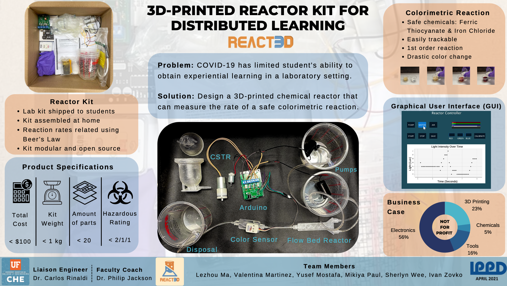

REACT3D
Capstone Project, Integrated Product & Process Design at UF
OBJECTIVE: Design, build, and deliver a low-cost 3D-printed chemical reactor kit that can measure the rate of safe colorimetric reactions. The kit will be used for distributed experiential learning.
USERS: Students and faculty in the Department of Chemical Engineering, and high school students in the future.
TEAM: Six engineering students, mechanical engineering, materials science engineering, and chemical engineering.
DESIGN PROGRESSION
I led the design and prototyping of the reactor. In most cases, continuous-stirred tank reactor is used for performing colorimetric reactions; however, this kind of reactor is bulky and hence expensive to produce. From my research on the kinematics of passive mixing, I was able to identify a channel shape that produced same mixing capacity. The idea was to design a flow bed reactor where the channel would disturb the current and thus perform passive mixing.
Images on the right show the evolution of the flow bed reactor and also the component for color sensing.

THE PURPOSE of this reactor kit is to provide students with the instructions and materials to conduct colorimetric chemical reaction labs safely at home. The kit consists of reactor parts, chemicals, pumps, motors, tubings, an Arduino, a PCB protoshield, a user manual, and a basic GUI.
BUSINESS CASE: The BoM cost of the prototype arrived at $98.88, under the $100 budget. Cost reduction could be achieved through wholesale sourcing. As a not-for-profit project, the cost for students to purchase the kit will reduce further when more are produced in the future.